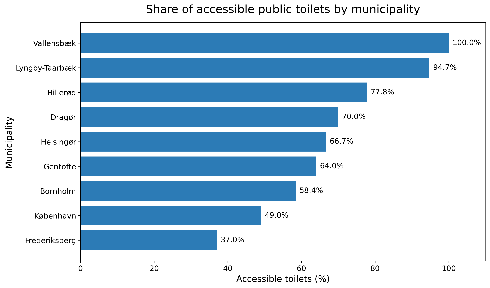
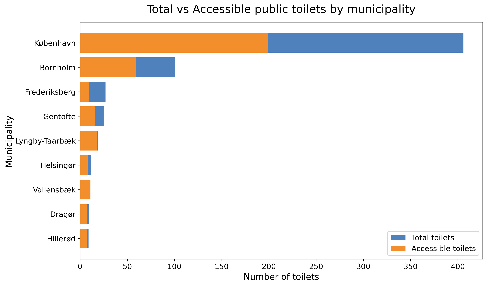

Overview
This study explores general accessibility indicators of public toilets across selected Danish municipalities. The analysis examines whether equal access to public toilet facilities is available for everyone across nine municipalities: Copenhagen, Frederiksberg, Dragør, Gentofte, Lyngby-Taarbæk, Hillerød, Vallensbæk, Helsingør, and Bornholm. Although additional municipalities exist within the Greater Copenhagen area, these nine were selected based on data availability and consistency. Accessibility can vary depending on individual needs, and a key focus of this study is the availability of facilities designed for people with disabilities. Figure 1 illustrates the proportion of accessible toilets relative to the total number of public toilets in each municipality, while Figure 2 compares the total number of public toilets with the number of accessible facilities across municipalities
1. Share of Accessible Public Toilets for Disable People

2. Total vs Accessible Public Toilets for Disable People

The figures reveal notable differences in accessibility across municipalities. While Copenhagen has by far the largest number of public toilets, only around half of them are accessible for people with disabilities. This suggests that a high number of facilities does not necessarily guarantee equal accessibility. In contrast, Vallensbæk has a comparatively small number of public toilets, yet all available facilities are accessible, indicating a stronger focus on inclusive infrastructure despite limited availability. A similar pattern can be observed in municipalities such as Lyngby-Taarbæk and Hillerød, where accessibility proportions are relatively high. Meanwhile, Frederiksberg shows one of the lowest accessibility shares among the selected municipalities. These differences may also be influenced by factors such as population size and population density, which can affect the total demand for public facilities. The relationship between toilet availability and population distribution will be explored further in the next section.
Spatial Distribution
Understanding where public toilets are located and how accessibility varies spatially is an important part of this study. The availability of toilets within a municipality is not determined only by its physical area, but also by how people are distributed across the region. Some municipalities contain large natural or low-populated areas, meaning that population density is unevenly distributed. Therefore, this study mainly focuses on the number of public toilets relative to the population size through a per capita toilet percentage analysis. The aim is to examine whether residents across different municipalities experience unequal access to public toilet facilities. Figure 3 presents the per capita percentage of public toilets in relation to population density, highlighting differences in toilet availability among municipalities. In addition, the Figure 3 interactive map visualizes the spatial distribution of accessible and non-accessible public toilets for people with disabilities within each municipality, providing a clearer understanding of accessibility patterns across the study area
3. Population Density vs Per Capita Toilets
Bubble size represents total number of toilets.
4. Toilet Distribution by Municipality
According to Figure 3, all municipalities except Bornholm have a per capita toilet percentage below 0.1%, indicating relatively limited toilet availability compared to their population size. In contrast, Bornholm shows a significantly higher value of approximately 0.25%, suggesting comparatively greater public toilet availability per resident.
Another noticeable pattern is the spatial distribution of toilets within Bornholm. Unlike several other municipalities where toilets are concentrated around dense urban centers, the toilets in Bornholm are distributed more evenly across the municipality. However, a higher concentration can still be observed near the coastal and border areas, likely reflecting tourism activity, transportation routes, and public gathering locations. This suggests that both population distribution and regional characteristics may influence how public toilet facilities are planned and located.
This spatial pattern may be influenced by several external factors, including population distribution, the location of working and commercial areas, and the presence of natural or recreational resources. Areas with higher human activity, such as construction zones, transport hubs, tourist attractions, or coastal recreational regions, may require a greater number of public toilet facilities. In municipalities with large natural or low-density regions, toilets may also be distributed strategically to support visitors and outdoor activities rather than being concentrated only in urban centers.
Accessibility Over Time
Accessibility also depends on whether public toilets are available when people actually need them. Due to limited data availability, it is difficult to provide a detailed comparison of opening-hour patterns across each municipality. However, the overall trend indicates that most public toilets operate mainly during standard working hours (9:00 AM–5:00 PM). The availability of toilets decreases noticeably before 9:00 AM and after 5:00 PM, suggesting more limited access during early morning, evening, and nighttime hours. This may particularly affect commuters, tourists, and individuals who rely on public facilities outside regular daytime periods.
5. Opening Hours Heatmap
Find a Toilet
Accessibility can vary depending on individual needs and preferences. Some users may be interested in finding public toilets based on specific accessibility features and available facilities, such as wheelchair accessibility, free access, water availability, or baby changing tables. To support this, the following interactive visualization allows users to explore and search for public toilets based on different accessibility requirements and facility features, helping individuals identify locations that best match their personal needs.
6. Find a Toilet — Facility Selection
Understanding Accessibility Beyond Numbers
Public toilet accessibility is not only about the number of toilets. It depends on whether toilets are accessible for disabled users, where they are located, when they are open, and what facilities they provide.
This dashboard combines spatial analysis, temporal availability, and facility-level accessibility to provide a more complete view of public toilet accessibility across Danish municipalities.
Spatial Accessibility
Maps reveal whether toilets are distributed fairly across municipalities and neighborhoods.
User-Centered Facilities
This study also considers key facility features that influence accessibility, including wheelchair access, baby changing tables, water availability, opening hours, and free usage. These features help provide a broader understanding of how well public toilets meet the needs of different user groups..